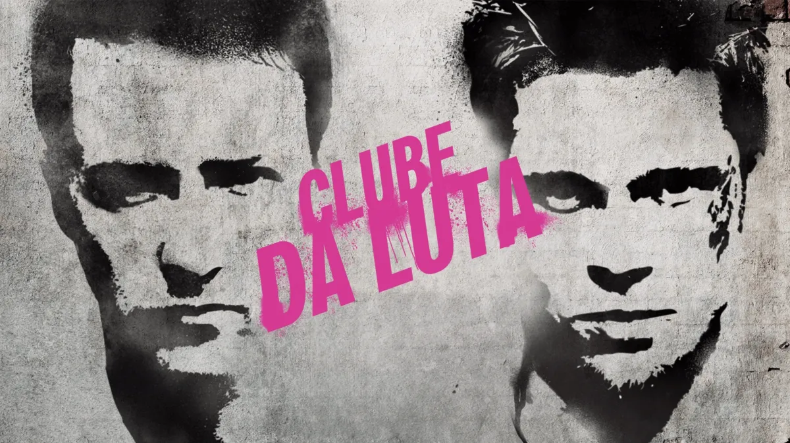
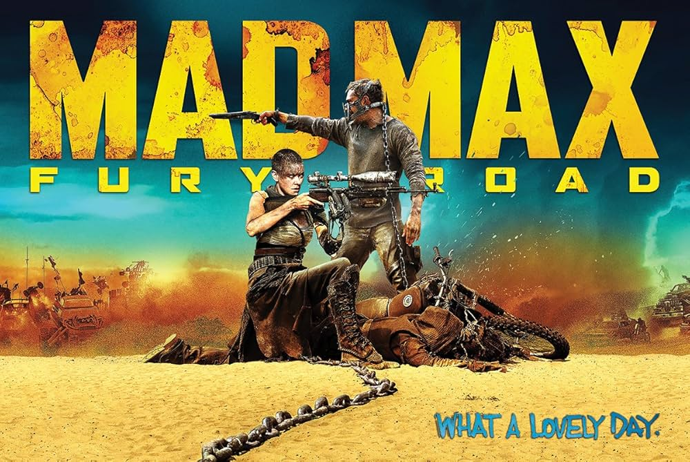
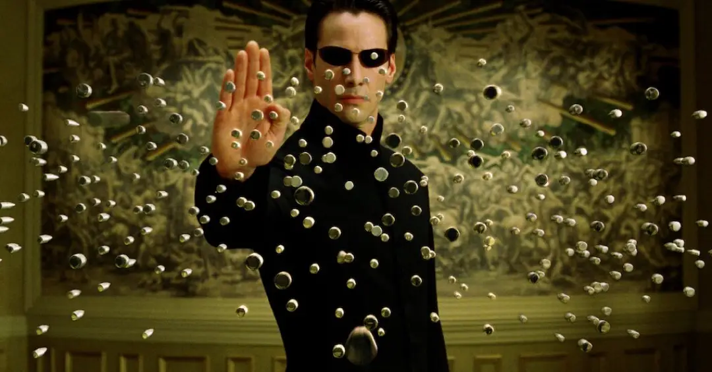
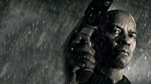
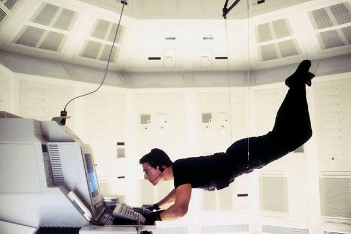

Clube da Luta narra a história de um homem deprimido e com insônia que encontra um vendedor de sabonetes carismático, Tyler Durden. Juntos, eles fundam um clube secreto de luta para homens que querem extravasar suas frustrações, mas a parceria é abalada pela chegada de Marla Singer, e o clube evolui para um projeto de anarquia com consequências perigosas. O protagonista é um executivo insatisfeito com sua vida de consumo e que sofre de insônia. Para encontrar alívio, ele frequenta grupos de apoio de pessoas com doenças graves. Nessas sessões de apoio, o narrador encontra Marla Singer, e ele sabe que Marla não tem nenhuma doença. ela o atrapalha à chorar nas sessões, que era sua forma de aliviar o estresse e conseguir dormir à noite. Tyler Durden: Um homem misterioso e anárquico que o protagonista conhece em um avião. Após o apartamento do narrador, o protagonista, explodir, ele passa a morar com Tyler. A partir da ideia de Tyler, eles formam um clube clandestino onde homens lutam entre si. A primeira regra é não falar sobre o clube, e as lutas servem como uma forma de catarse e de se sentirem vivos. O narrador percebe a extensão dos planos de Tyler e tenta detê-los. Nessa hora, a ficha cai. o narrador percebe que Tyler Durden era apenas uma personificação em sua mente, não uma pessoa real. ele é preso por Tyler em uma Van cheia de exploisivos, que iriam explodir o prédio cujo Tyler pretendia explodir. Ele briga com Tyler e dá um tiro na própria boca para matá-lo, revelando finalmente ao narrador, que Tyler era apenas uma projeção mental. Ele vai de encontro com Marla, em outro prédio. ela nota o estado atual dele, e quando eles menos esperam, os explosivos destroem os prédios. o filme termina com o narrador e Marla de mãos dadas, assistindo às explosões.

A história de John Wick começa com um assassino aposentado, John Wick, que é forçado a retornar à sua vida de violência após ter seu carro roubado e seu filhote, um presente de sua falecida esposa, morto por gangsters russos. A busca por vingança por esse último presente de sua esposa o leva de volta ao submundo do crime que ele havia abandonado, desencadeando uma sequência de eventos violentos e reviravoltas. Após a morte de sua esposa Helen por uma doença terminal, John viveu um luto difícil. Antes de morrer, ela encomendou um filhote, Daisy, para lhe fazer companhia e ajudá-lo a lidar com a perda. Poucos dias após o funeral, enquanto dirigia seu Mustang, John para em um posto de gasolina, onde Iosef Tarasov e sua gangue o abordam para roubar seu carro. John se recusa e, mais tarde naquela noite, eles invadem sua casa, roubam o carro e matam brutalmente Daisy. A morte de Daisy é a gota d'água para John, que jura vingança contra Iosef. Ele retoma suas habilidades de assassino para caçar e matar Iosef e seus cúmplices, o que o leva de volta ao mundo perigoso de onde ele tentou fugir. Ao voltar a matar, John quebra as regras do submundo, ganhando uma recompensa milionária sobre sua cabeça. Ele deve enfrentar todos os assassinos do mundo que agora o caçam, enquanto também lida com as consequências de suas ações no mundo do crime organizado. No final de John Wick, ele derrota Viggo Tarasov em um confronto final, matando-o. Ferido, John vai a um hospital veterinário para tratar seus ferimentos, adota um filhote de cachorro e sai caminhando em direção ao pôr do sol, um momento que o reconecta com a memória de sua falecida esposa.

Em "Mad Max: Estrada da Fúria", Max Rockatansky é capturado pelo tirano Immortan Joe e se vê forçado a ajudar a Imperatriz Furiosa, que foge com suas "esposas" em busca de liberdade. A trama se desenvolve em uma perseguição implacável pelo deserto, onde Max e Furiosa formam uma aliança improvável para escapar do exército de Joe. A história começa com Max capturado por Immortan Joe. Simultaneamente, a Imperatriz Furiosa, uma das líderes de Joe, foge da Cidadela em um caminhão de guerra, levando consigo as esposas prisioneiras de Joe em busca de um lugar seguro, a "Terra Verde". Max, que estava sendo usado como "bolsa de sangue" para um dos guerreiros de Joe, acaba se envolvendo na fuga e, após uma luta com Furiosa, decide ajudá-la em sua busca. Immortan Joe, furioso com a fuga e com o roubo de algo insubstituível, reúne seu exército e inicia uma perseguição mortal através do deserto, resultando em batalhas intensas e caos. Ao chegarem a um cânion, eles descobrem que não há saída. Max então sugere que voltem para a Cidadela, agora indefesa, para tomá-la. Na batalha final, Furiosa mata Immortan Joe. Nux se sacrifica para bloquear o cânion, permitindo que o grupo retorne para a Cidadela com água e suprimentos. Max, após transfundir seu sangue para Furiosa, desaparece na multidão enquanto o povo celebra a morte de Joe.

Matrix gira em torno de um hacker chamado Neo (Thomas Anderson) que descobre que a realidade em que vive é uma simulação criada por máquinas para controlar a humanidade. Ele é libertado por um grupo de rebeldes liderado por Morpheus e Trinity, que acreditam que ele é o "Escolhido", uma profecia de salvador destinado a libertar a humanidade do controle das máquinas, para isso ele precisa confrontar os Agentes que protegem a simulação. A maior parte da humanidade vive em cápsulas, inconsciente de que seus corpos são usados como fonte de energia para as máquinas. A "Matrix" é uma realidade virtual, uma simulação de computador criada para manter os humanos passivos e controlados. A guerra entre humanos e máquinas ocorreu no passado, após a inteligência artificial criada pelos humanos ter se rebelado. Neo, um programador de computador que se sente desconectado do mundo, é contatado por Morpheus e Trinity, que o tiram da Matrix. Ele descobre a verdade sobre a simulação, sendo confrontado com a escolha de voltar à vida confortável da Matrix ou enfrentar a dolorosa realidade do mundo real e se juntar à resistência. Ao aceitar a verdade, Neo é levado para a realidade, onde aprende sobre suas próprias habilidades e se torna um guerreiro. Ele é convencido de que é o escolhido, profetizado para libertar a humanidade. Neo, com a ajuda de Trinity, precisa enfrentar os agentes, que são programas que servem para manter a ordem dentro da Matrix. Neo é morto pelo Agente Smith, mas é ressuscitado pelo amor de Trinity, transformando-o no escolhido, capaz de ver o mundo como realmente é, feito de código. Ele, então, derrota o Agente Smith e começa a entender o poder que possui para manipular a Matrix, sinalizando o início de sua jornada para libertar a humanidade.

“O Protetor” acompanha Robert McCall, um homem quieto e metódico que leva uma vida simples trabalhando em uma loja de materiais de construção. Apesar do jeito calmo, McCall esconde um passado misterioso como agente altamente treinado, algo que tenta deixar enterrado. Sua rotina muda quando ele cria um vínculo inesperado com Teri, uma jovem prostituta presa em um ciclo de violência sob controle de mafiosos russos. Ao vê-la brutalmente agredida, McCall percebe que não consegue mais ignorar injustiças. Ele confronta os responsáveis, oferecendo uma chance de resolver tudo pacificamente — mas, quando é recusado, ele usa suas habilidades letais para eliminar os criminosos com precisão calculada. A retaliação dos russos cresce a ponto de enviar um ex-militar psicopata para caçá-lo. O clímax ocorre dentro da própria loja onde McCall trabalha: transformando o ambiente em um campo de batalha, ele usa ferramentas comuns como armas improvisadas para derrotar os inimigos um a um. No fim, McCall abraça seu papel como vigilante, passando a ajudar quem não consegue se defender.

“Missão: Impossível” acompanha Ethan Hunt, um agente de elite da IMF que vê sua vida virar de cabeça para baixo quando uma missão em Praga dá terrivelmente errado. A equipe inteira é morta em uma emboscada, e Ethan é incriminado como traidor. Perseguido pela própria agência, ele se torna um fugitivo determinado a descobrir quem realmente está por trás da conspiração. Para limpar seu nome, Ethan recruta dois ex-agentes renegados e monta uma operação clandestina para recuperar uma lista secreta contendo identidades de agentes infiltrados — informação que, se cair nas mãos erradas, pode destruir a IMF. O clímax acontece no lendário assalto ao trem-bala: Ethan enfrenta o verdadeiro traidor em uma sequência insana que mistura acrobacias, velocidade e tensão máxima, culminando em uma luta no topo de um TGV em movimento. No fim, ele expõe o culpado, recupera a lista e restaura sua honra, mas entende que sua vida nunca mais será normal. Ethan aceita o peso da responsabilidade e se torna o agente lendário que define toda a franquia.